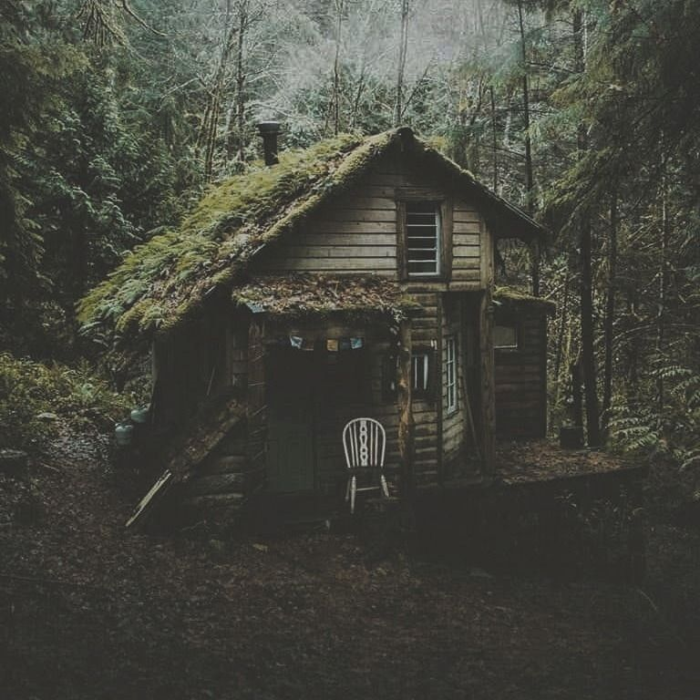

You make your way towards the cabin in the distance. It initially appeared to be super far away, but within a few minutes, it stood before you. That was odd. Now that you think about it, the cozy wooden cabin suddenly doesn’t look as welcoming as you thought. Cobwebs hung on nearly every surface of the cabin and moss had covered just as much surface if not more.
Before you can even think about knocking on the door or chicken out, the door swings open with a loud creak. A hunched-over old woman comes shuffling from behind the door.
“Oh, a visitor!” She exclaimed with a grin, her squinty eyes scanning you up and down.
“Please, please, come in!” She made the motion of ushering you inside.